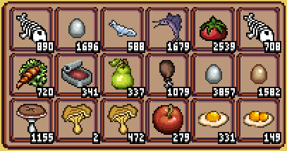

My Inventory Documentation
An Inventory System by Erik (Sandpile) Sänd.
Description
My inventory is an Inventory system designed to be easy to use, yet flexible and customizable enough for you to be able to achieve
Any inventory look you want ranging from Animal Crossing, to Stardew Valley and Minecraft, all inside the Unity game engine.
Every look is achievable using My Inventory!


Starting Guide
To setup a basic inventory, you first need to configure an InventorySkin scriptableObject to reference.
You also need to create a Canvas object in your scene, and add an InventoryImage as a child to the Canvas.
fix canvas settings
In a new script, add this:
public Inventory inventory;
public InventorySkin skin;
public InventoryImage image;
void Awake() {
inventory = Inventory.Load("player_inventory", skin);
}
void Update() {
inventory.Draw(image);
}
Now when you start the unity player, you should see an inventory on the screen.
Adding items
You will realize that there are no items in your inventory. To add an item to a slot, after loading your inventory you can use
inventory.PlaceItem(ItemShelf.Random, 0, 0, 1);
This will take a random item from the ItemShelf, and place it in slot(0, 0) with a count of 1.